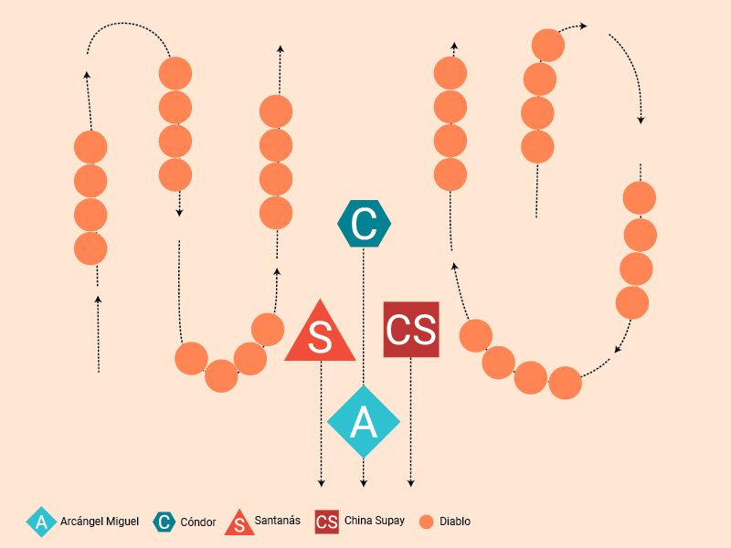

La ciudad de Oruro ubicada en Bolivia, conocida localidad minera, realiza uno de los carnavales más antiguos del mundo. Este se realiza alrededor del seis o diez días en el mes de febrero. Se recorren aproximadamente cuatro kilómetros durante veinte horas por la ciudad, agradeciendo a la patrona del lugar y de los mineros: la Virgen de Socavón.

Últimamente este carnaval ha convocado a un gran número de turistas, pero su fin es reunir a la localidad para conmemorar el ritual que realizaba el pueblo de Uru para alabar a sus dioses. Para esto cuentan con la participación de aproximadamente más de 28.000 bailarines y 10.000 músicos para realizar las distintas coreografías folclóricas que componen el festival, caracterizados por sus movimientos, vestuarios, personajes y origen de existencia.
Historia
-
En un principio el pueblo de Uru se reunía para alabar y conmemorar a sus distintos dioses en especial a la Pachamama (Madre Tierra) y a su antiguo dios Tio (Dios del inframundo) en la fiesta llamada Ito.
En un principio el pueblo de Uru se reunía para alabar y conmemorar a sus distintos dioses en especial a la Pachamama (Madre Tierra) y a su antiguo dios Tio (Dios del inframundo) en la fiesta llamada Ito.
-
Para la llegada de los españoles este tipo de conmemoración era considerada pagana por ser una alabanza a otros dioses, por lo que se prohibieron en su totalidad. A pesar de esto de igual manera este tipo de ritual cayó en la clandestinidad y se siguió realizando, pero con ciertas modificaciones que se adaptaron de la evangelización de los españoles.
-
Actualmente podemos apreciar que esta conmemoración se conforma por un sincretismo de cultura del pueblo de Uru y los españoles, la cual consiste en la conmemoración de la Virgen de Socavón representando su lucha junto al Arcángel Miguel contra el Diablo y sus diablillos. A pesar de que estos personajes son meramente católicos, aún se pueden apreciar divinidades prehispánicas como lo es el Cóndor.
Actualmente podemos apreciar que esta conmemoración se conforma por un sincretismo de cultura del pueblo de Uru y los españoles, la cual consiste en la conmemoración de la Virgen de Socavón representando su lucha junto al Arcángel Miguel contra el Diablo y sus diablillos. A pesar de que estos personajes son meramente católicos, aún se pueden apreciar divinidades prehispánicas como lo es el Cóndor.
Baile
La diablada
En el carnaval se conforman distintos bailes folclóricos que contienen sus propias coreografías, vestimentas, elementos y relatos. La Diablada, es uno de los rituales más conocidos que forma parte de este carnaval y proyecta el baile de los diablos en esta batalla del Bien y el Mal. Esta se caracteriza por sus vestimentas extravagantes, coreografías y los personajes que componen la representación de la batalla.
Personajes
Arcángel Miguel
China Supay
El Diablo
El Cóndor

Oso
Diablos

Chinas diablas
Virtudes
Formación
Coreografía

Saludo

Mudanza

Danza de los diablos

Ovillo

Estrella
Escuadras de invasión

Continuación
Se presentan los personajes, liderando el Arcángel. Saludan al público y a los diablos.